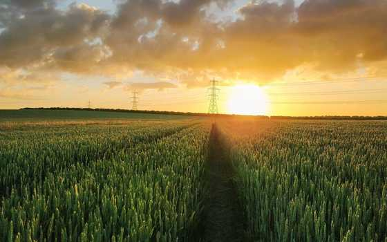

Boulangerie Sai
黄色い壁とレンガの小さなパン屋さん。木のぬくもりの中で、ゆっくり発酵させた手づくりのパンを。
ヒーロー写真: Sunrise in a wheat field near Cambridge, UK / sagesolar / CC BY 2.0(撮影地: 英国)
パンのこと
掲載写真はフリー素材のイメージで、店舗の実際の様子や商品ではありません。
紹介記事などで、次のようなパンが紹介されています。品ぞろえ・価格・営業時間は準備中とし、最新情報はInstagramをご確認ください。
- パンドミ(食パン)
- バゲット・塩バターフランス
- カヌレ
- プレッツェル
- 塩パン
- パン・オ・ショコラ
価格・営業時間・定休日: 準備中


口コミ(イメージ例)
以下は制作側が作成した例文で、実在のお客様の声ではありません。
イメージ例
住宅街の黄色い外観が目印で、すぐに分かりました。焼きたての香りに迷ってしまいます。
イメージ例
しっとりした食パンは、そのままでもおいしい一品。朝ごはんが楽しみになりました。
イメージ例
カヌレの外側のカリッと感が好みです。手みやげにもよさそうだと思いました。
お店のこと
Boulangerie Sai(ブーランジェリー サイ)は、高崎の市街地から少し離れた閑静な住宅街にあるパン屋さんです。紹介記事によると、外観は映画「魔女の宅急便」のパン屋をイメージした黄色い壁とレンガの装飾、店内は木のぬくもりを感じる造りとされています。
店主は大手ベーカリーでの勤務経験が長いベテランの職人で、添加物を使わず、生地をじっくり発酵させた手づくりのパンを焼いていると紹介されています(2019〜2020年頃の記事による情報です)。
店名「Sai」の意味は確認できていません。


アクセス
〒370-0844 群馬県高崎市和田多中町398-2
電話: 準備中 / 営業時間: 準備中 / 定休日: 準備中
Instagram: @boulangeriesai